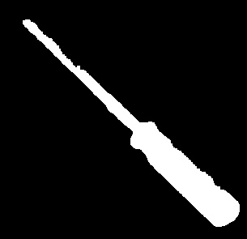

Intelligent Robotics Track
MacGyvBot
당신을 맥가이버로 만들어줄 로봇
MacGyvBotPresentation Flow
목차
1. MacGyvBot이 해결하고자 하는 문제공구 요청과 반납 흐름
2. 시스템 디자인ROS 2 task architecture
3. 구현Command, Task, Perception, Manipulation
4. Safety / Simulationrecovery와 Isaac Sim 검증
5. 평가결과와 개선 방향
MacGyvBotProblem / Persona
페르소나: 작업 위치를 떠나기 어려운 현장 작업자

CONTEXT보관 장소와 작업 위치 분리
공구 서랍은 정리된 보관 장소에 있고, 작업자는 다른 위치에서 장비를 다룹니다.
MOMENT작업 중 공구 교체
렌치, 드라이버처럼 필요한 공구가 바뀔 때 작업자는 위치를 이탈하지 않고 요청합니다.
EXPECTATION가져오고, 전달하고, 다시 보관
로봇은 서랍에서 공구를 꺼내 작업자에게 전달하고, 사용 후 다시 보관 장소로 돌려놓습니다.
MacGyvBotProblem / Why Robot
문제 정의: Tool Flow Interruption
MacGyvBotSystem Design / Task Flow
전체 작업 흐름도
MacGyvBotSystem Design / Architecture
Service 아키텍처
MacGyvBotDevelopment Flow
Project Development Process
MacGyvBotTeam / Role
팀원별 담당 영역
MacGyvBotCommand / Pipeline
자연어 명령을 Task로 바꾸는 Command Pipeline
MacGyvBotCommand / Prompt Engineering
Schema와 Context 기반 LLM Parser
MacGyvBotOperator GUI
로봇 상태 확인과 수동 제어를 통합한 Operator GUI

STATUSRobot Status로봇·카메라·Detector 상태 확인UI
CHATChat / TTS사용자에게 필요한 안내만 chat으로 표시하고 TTS는 chat 메시지만 발화UX
LOGTask Log개발자가 볼 topic/status/error detail은 log panel로 분리DBG
GRIPGripper Control안전 상태에서만 slider와 숫자 입력으로 RG2 gripper 폭 제어SAFE
MacGyvBotTask Coordination / Task Queue
가져오기와 반납을 TaskStep으로 분해
MacGyvBotTask Coordination / Design Choice
ROS2 Action vs. TaskStep Queue
MacGyvBotTask Coordination / Pause Resume
TaskStep Queue 상태 처리
MacGyvBotPerception / Hand-eye Calibration
Hand-eye calibration 절차와 좌표 변환 검증
MacGyvBotPerception / Tool Detection
Tool Domain YOLO fine-tuning
MacGyvBotPerception / Tool Detection / Evaluation
YOLO detection success condition
MacGyvBotPerception / Handoff / Initial Limitation
초기 공구 전달 구현과 rule-based 한계
Tool bboxYOLO가 찾은 공구 영역
Hand landmark손 위치와 주요 관절 좌표
Distance / overlap손과 공구의 근접도 계산
Rule thresholdgrasp 여부 판단

 MacGyvBot
MacGyvBotPerception / Mask Generation
SAM+Depth mask
YOLO bbox ROIbbox를 clamp하고 crop 기준으로 사용
SAM foregroundbbox 안에서 물체처럼 보이는 mask 생성
Foreground depthmask 안 가까운 depth cluster 선택
Refine + morphologydepth tolerance로 남기고 구멍 보정
 MacGyvBot
MacGyvBotPerception / Handoff
SAM+Depth mask를 이용한 handoff 감지
RELEASE GATE
hand landmark ML classifier + SAM depth mask contact
rule-based proximity 대신 손 landmark 지도학습 모델로 grasp/open을 먼저 판단합니다. 여기에 SAM+Depth mask로 잡힌 공구 표면과의 contact, 시간 안정성을 함께 확인해 release gate를 닫습니다.
MLhand landmarks → grasp / open classification
MASKSAM+Depth locked tool surface → contact evidence

 MacGyvBot
MacGyvBotPerception / Grasp Method / VLM Trial
Grasp Point Selection Method
단계
시도한 접근
판단
bbox center baseline
YOLO bbox 중심 좌표로 빠르게 target 생성
x, y는 빠르지만 yaw와 안정적인 grasp point가 부족했습니다.
VLM / VLA 구상
VLM이 계획하고 VLA가 다음 행동을 생성하는 구조를 기대
현재 구조는 좌표 계산 후 MoveIt 실행이 핵심이라 적용 부담이 컸습니다.
VLM grasp 실험
SmolVLM, Qwen 3B/7B, Gemini와 grid prompt 실험
latency, 프롬프트 일관성, 데이터 부족 때문에 실제 제어 입력으로 쓰기 어려웠습니다.
 MacGyvBot
MacGyvBotPerception / Grasp Method / Decision
Final Method
MacGyvBotPerception / PCA Grasp
Task-specific YOLO | SAM+Depth Mask | PCA


1. Cropbbox ROI
2. Maskforeground pixels
3. PCAprincipal axis → yaw
 MacGyvBot
MacGyvBotManipulation / Drawer Assumption
일반 서랍은 고정된 보관 위치를 전제로 좌표를 관리했습니다
MacGyvBotManipulation / ArUco Placement
ArUco marker 기준 center-to-center 공구 배치
Marker center서랍 기준 ArUco marker 중심 좌표 인식
Slot offsetmarker center에서 tool slot center까지의 offset 관리
Place targettool center가 slot center에 오도록 목표 pose 계산
Store toolsafe z, RG2 release, drawer close 순서로 보관
 MacGyvBot
MacGyvBotSafety / Drawer Collision Scene
Drawer collision scene

SAFETY DESIGN
drawer collision scene + RG2 self-collision 관리
서랍과 gripper를 planning scene에 반영하여 로봇이 위험한 동작을 계획하지 않도록 합니다. 동시에 collision object가 목표 pose를 과하게 막지 않도록 조정이 필요했습니다.
PLANsafe but not over-constrained
MacGyvBotSafety / IK Branch Selection
Unintended Robot Movement

SAFETY FIX
현재 자세에서 가장 가까운 IK 해를 직접 선택하도록 바꿨습니다
pose goal을 MoveIt에 그대로 넘기지 않고, 현재 joint state를 기준으로 여러 IK 후보를 비교한 뒤 가장 작은 joint delta를 만드는 goal만 실행합니다.
BEFOREPose goalMoveIt 내부 IK 선택에 맡겨 먼 branch가 선택될 수 있었음RISK
SELECTIK candidates여러 seed로 IK 후보를 만들고 equivalent joint angle을 현재 각도에 가깝게 정규화COMPARE
EXECUTERobotStatejoint delta가 가장 작은 후보를 RobotState goal로 전달하고, limit 초과 시 실행 중단SAFE
MacGyvBotSafety / Drop Detection Recovery
Tool Drop Recovery
Drop event/tool_drop_detected
Cancel motion현재 MoveIt goal cancel
Keep queuesuspended step 보존
Recover graspYOLO/depth/PCA 재사용
Resume중단 step 재실행
 MacGyvBot
MacGyvBotIsaac Sim Simulation
Isaac Sim Drawer Open Close
 MacGyvBot
MacGyvBotProject Impact
작업자의 공구 흐름 단절 문제 해결
MacGyvBotLimitations / Future Work